Tu trouvais les cinematiques intercalees « pas mal mais trop cryptiques ». Trois changements : (1) une bible narrative courte
(tools/histoire_bible.md), (2) chaque écran de dialogue montre en un coup d'œil OU on est, CE QU'ON CHERCHE et OU
on en est dans l'histoire, (3) dialogues raccourcis (48 % de texte en moins : 14068 car. au lieu de 26905) et 10 incoherences resolues.
Les GIF sont du vrai moteur (écran de dialogue, 1 image par replique). L'« avant » est le texte exact d'origine.
Le fil rouge visible : le badge vole (actes 1-3), puis la montee vers la PDG (actes 4-5), puis le réveil (saison 2). Multijoueur : rendu seulement, aucune desynchronisation ; roguelite : pas de pseudo-tuto.
Valerie = fin de saison 1, Kaze = fin de saison 2, Le Rappel = le seul vrai boss final. « La tour du boss final » retire. L'Ange reste hors histoire.
Remplace par « Plus de vague. Plus personne a battre. » : plus de contradiction avec le Rappel.
Le mot « rêve » n'apparaît plus avant la revelation de la fin de saison 1. Avant : des indices (drrring lointain, post-it « Reveille-toi », ascenseur « Étage 7 », 4 h 12 de sommeil).
Des la 1re scène : « Dans sa tête, il se bat sous les traits de HERO. » Chaque combattant est une facette de Leon.
Le boss garde son nom et dit « Tu as mon visage » : c'est le double fatigue de Leon, quel que soit le combattant joue.
Un talkie a antenne et des ondes sont dessines, la mention « TALKIE - salle des cameras » s'affiche et le nom devient « Mira (talkie) ».
47 nuits avant le jeu (Valerie, Ren, Le Rappel). La nuit finale est la 48e : « pour la première fois en quarante-huit nuits ».
Le bandeau de gag n'apparaît que s'il y a un gag (hors ligne et en ligne).
L'Ange reste hors histoire, ambigu volontairement ; note ajoutee dans la bible narrative.
Repliques de 150 caractères maxi (teste), texte total des dialogues divise par ~2 ; le sens passe par la carte, le lieu, l'objectif en icone.
Ce qui arrive et pourquoi : Des voyous lui volent son badge sur ordre ; il gagne un daemon.
Bandeau : La ruelle, sous la pluie - Retrouve ton badge vole
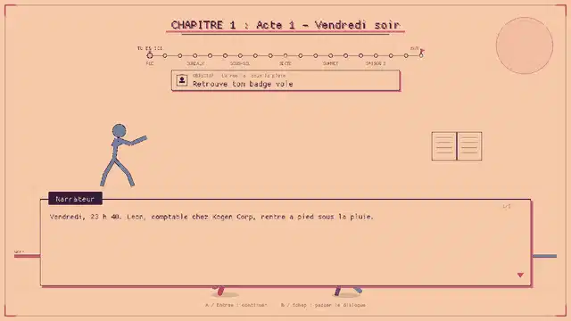
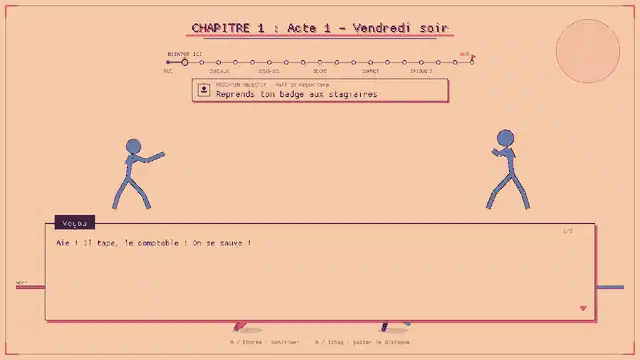
Ce qui arrive et pourquoi : La DRH l'accuse du vol du coffre ; des stagiaires rapportent des badges a Dylan.
Bandeau : Hall de Kogen Corp - Reprends ton badge aux stagiaires
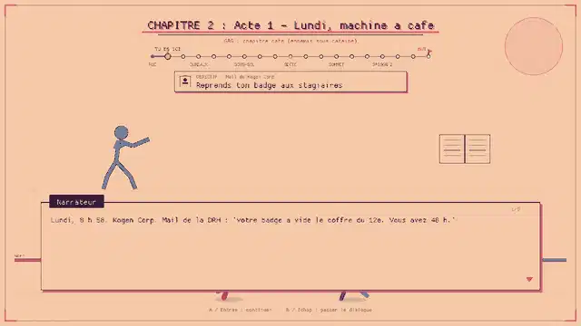
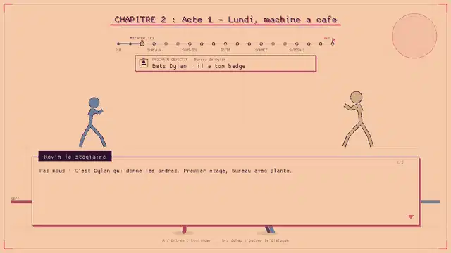
Ce qui arrive et pourquoi : Dylan a son badge et le donne a Salvatore.
Bandeau : Bureau de Dylan - Bats Dylan : il a ton badge
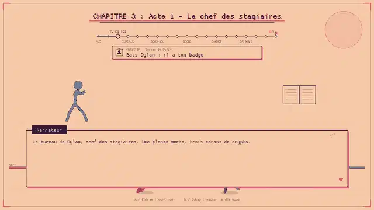
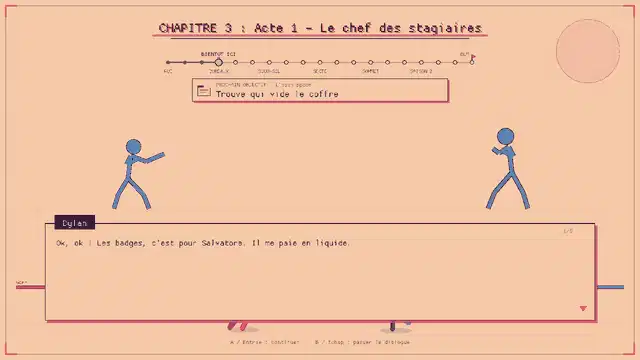
Ce qui arrive et pourquoi : Il découvre une 2e compta cachee : le vrai vol est ailleurs.
Bandeau : L'open space - Trouve qui vide le coffre
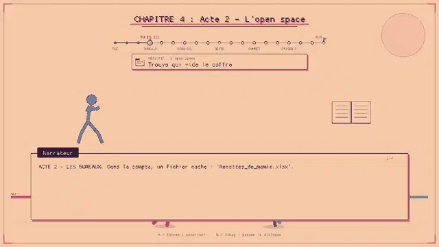
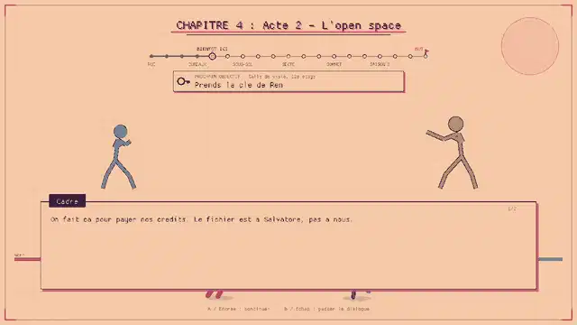
Ce qui arrive et pourquoi : Ren, ami perdu de vue, lui donne la cle de l'ascenseur et lui dit de partir.
Bandeau : Salle de visio, 12e étage - Prends la cle de Ren
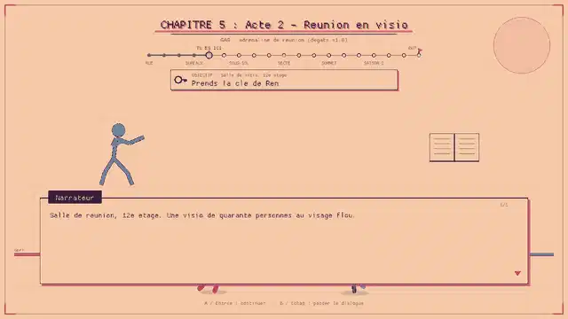
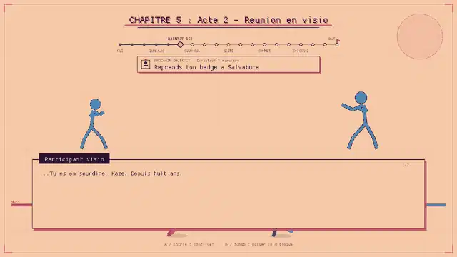
Ce qui arrive et pourquoi : Salvatore (faux comptes) a confie le badge au clan Tsukikage.
Bandeau : Direction financiere - Reprends ton badge a Salvatore
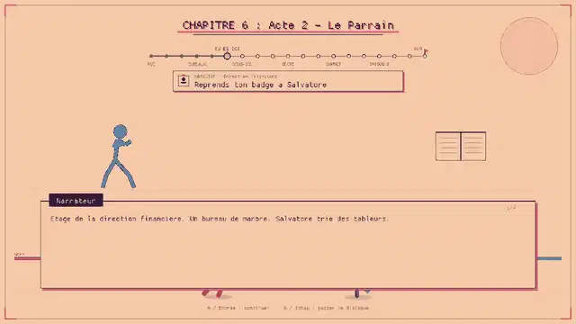
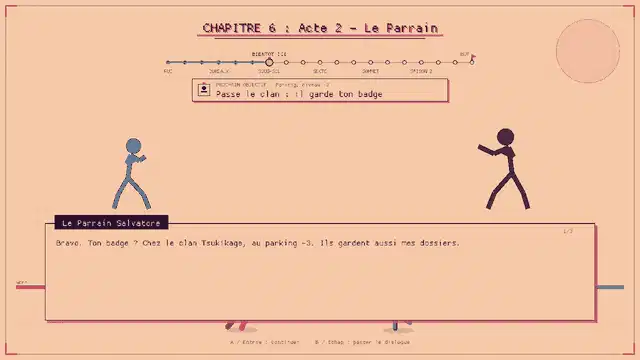
Ce qui arrive et pourquoi : Mira, depuis ses cameras, l'aide a passer le clan.
Bandeau : Parking, niveau -3 - Passe le clan : il garde ton badge
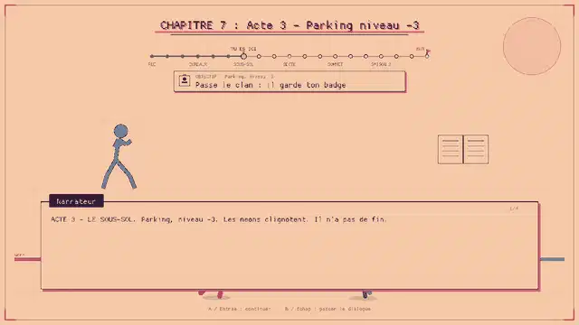
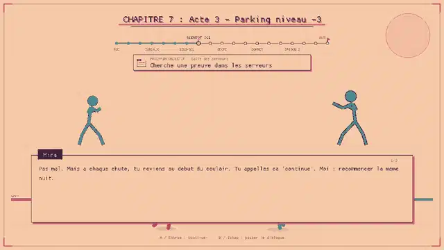
Ce qui arrive et pourquoi : Ren veut le retenir ; aucune preuve de vol, seulement ses animes.
Bandeau : Salle des serveurs - Cherche une preuve dans les serveurs
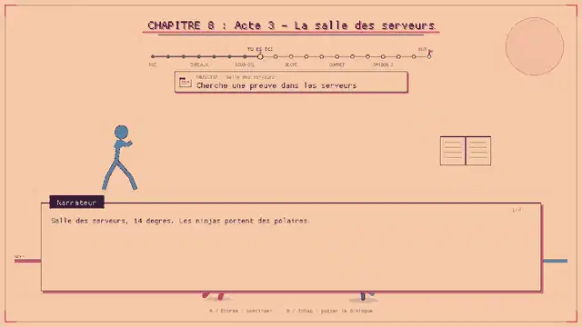
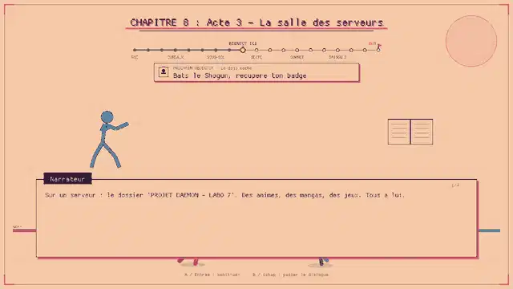
Ce qui arrive et pourquoi : Le Shogun lui rend son badge et l'envoie au 30e.
Bandeau : Le dojo cache - Bats le Shogun, recupere ton badge
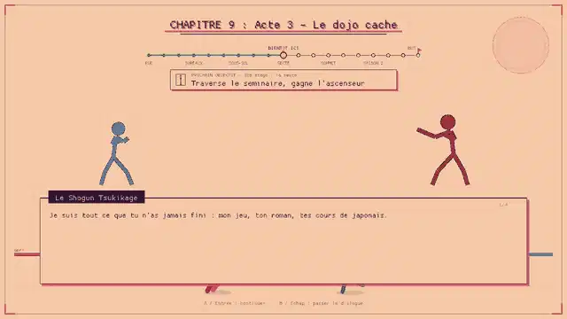
Ce qui arrive et pourquoi : Pour atteindre l'ascenseur, il traverse la secte qui veut l'aligner.
Bandeau : 30e étage : la secte - Traverse le seminaire, gagne l'ascenseur
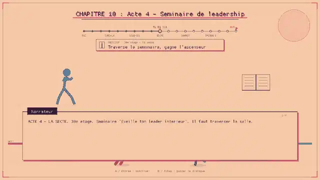
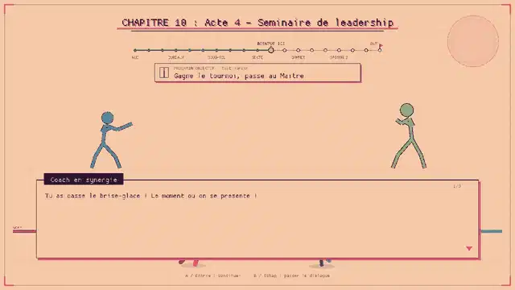
Ce qui arrive et pourquoi : Le tournoi mene au Maître Noir ; un livret relie la secte au Senateur.
Bandeau : Toit-jardin - Gagne le tournoi, passe au Maître
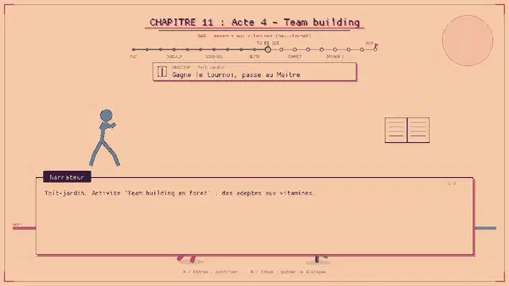
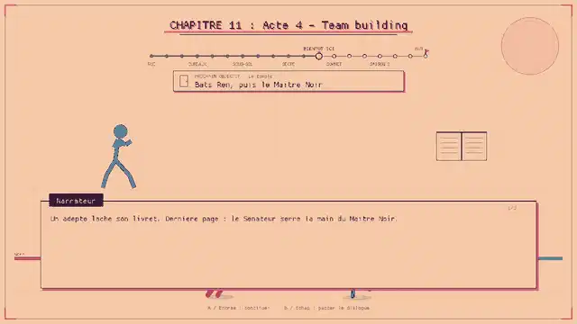
Ce qui arrive et pourquoi : Ren se bat en rival ; le Maître Noir designe le Senateur.
Bandeau : Le temple - Bats Ren, puis le Maître Noir
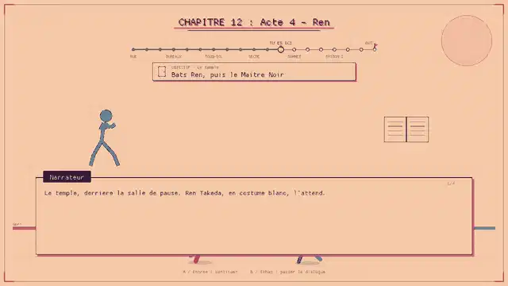
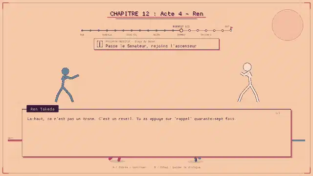
Ce qui arrive et pourquoi : Le Senateur garde l'ascenseur et avoue : tout remonte a la PDG.
Bandeau : Étage du Senat - Passe le Senateur, rejoins l'ascenseur
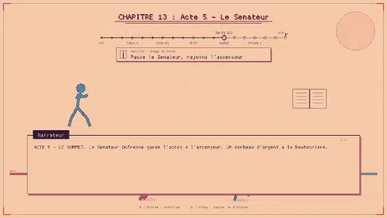
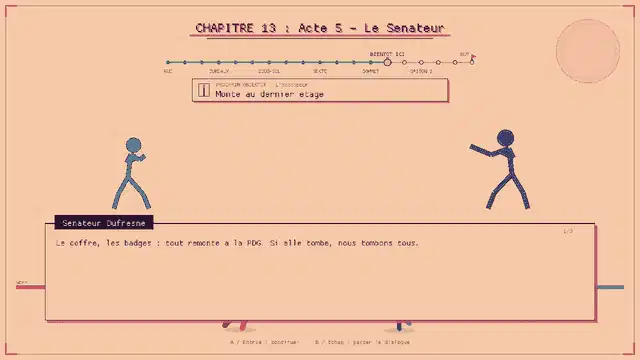
Ce qui arrive et pourquoi : Boss rush en ascenseur ; Mira rassure par talkie.
Bandeau : L'ascenseur - Monte au dernier étage
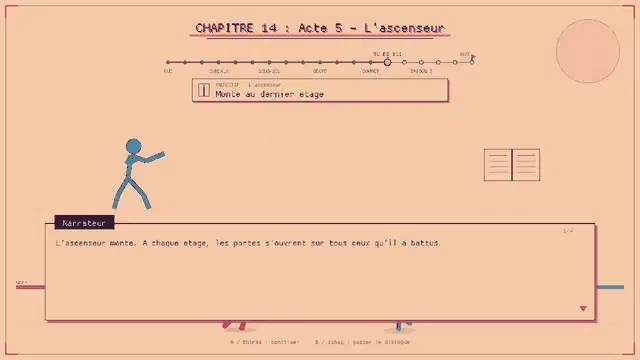
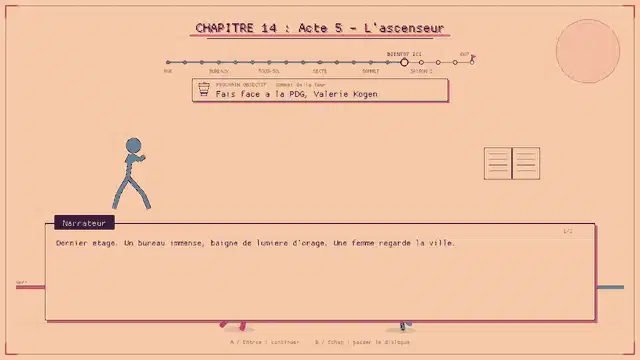
Ce qui arrive et pourquoi : Valerie révèle que le vol n'a jamais existe : fin de la saison 1.
Bandeau : Sommet de la tour - Fais face a la PDG, Valerie Kogen
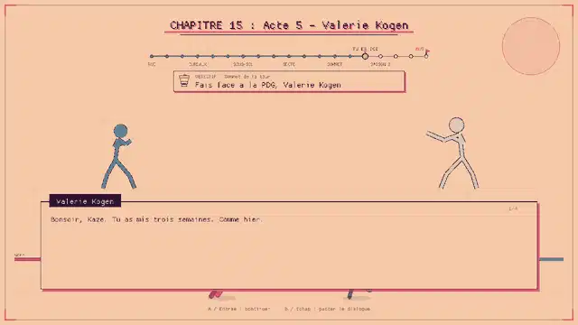
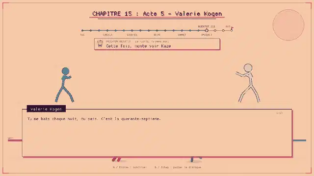
Ce qui arrive et pourquoi : Il sait qu'il rêve, mais ses poings se levent seuls.
Bandeau : La ruelle, la même nuit - Cette fois, monte voir Kaze
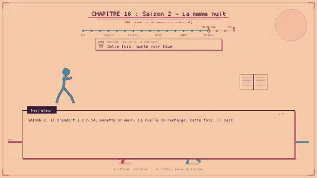
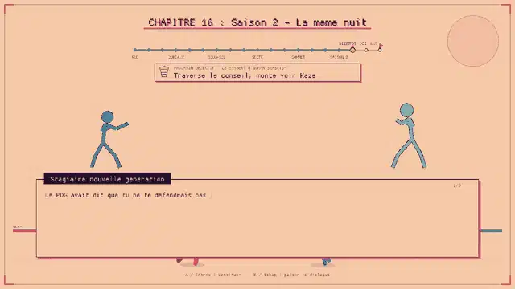
Ce qui arrive et pourquoi : Toutes ses peurs en réunion : on revient tant qu'il croit devoir gagner.
Bandeau : Le conseil d'administration - Traverse le conseil, monte voir Kaze
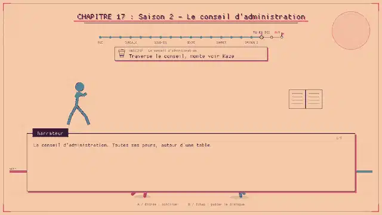
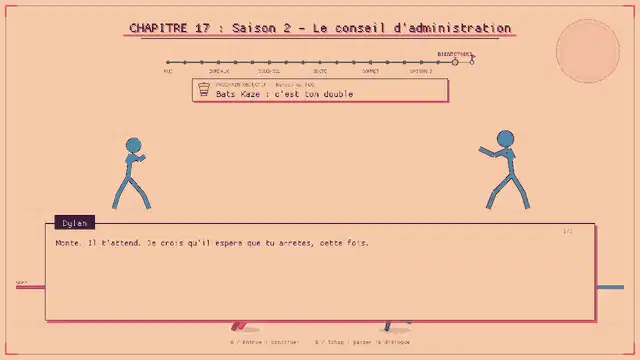
Ce qui arrive et pourquoi : Son double fatigue lui offre le fauteuil ou une nouvelle partie.
Bandeau : Bureau du PDG - Bats Kaze : c'est ton double
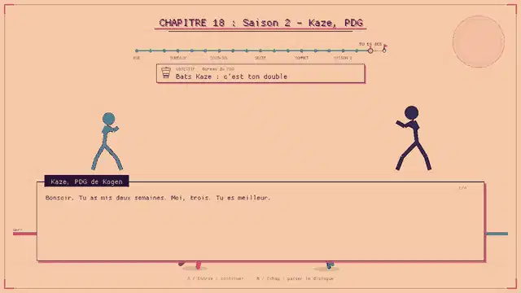
Ce qui arrive et pourquoi : Le dernier boss est le réveil ; il pose la manette.
Bandeau : Étage 7, l'ascenseur - Atteins le bouton ARRET avant 07:00
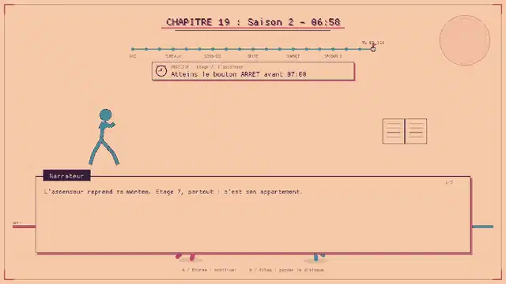
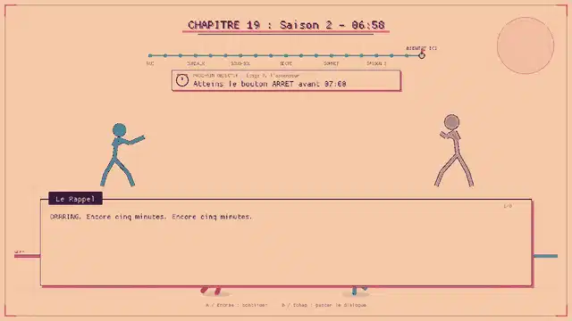
Ce qui arrive et pourquoi : Il pose la manette, dort, écrit a Ren.
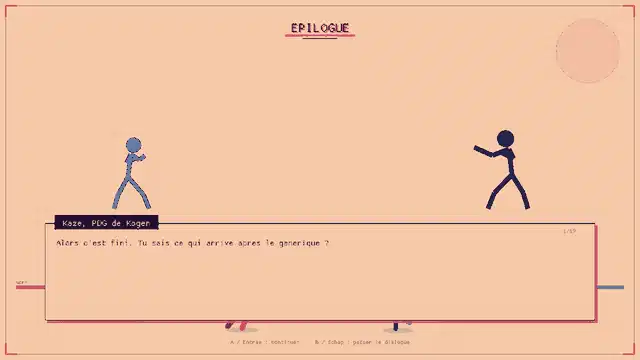